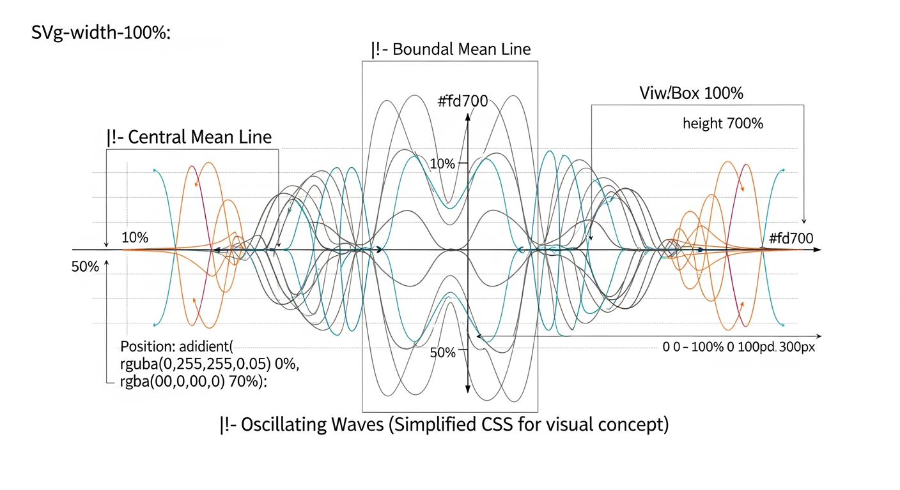
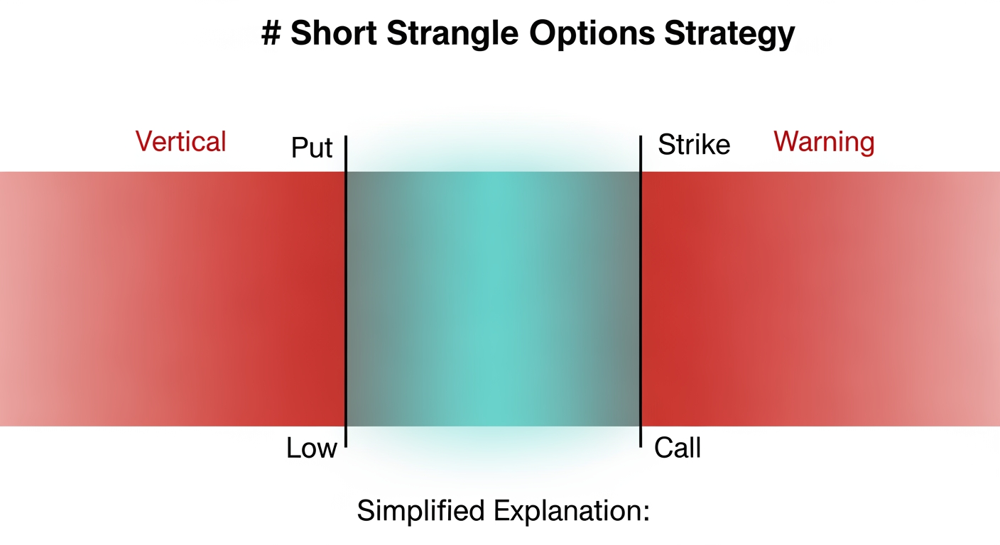
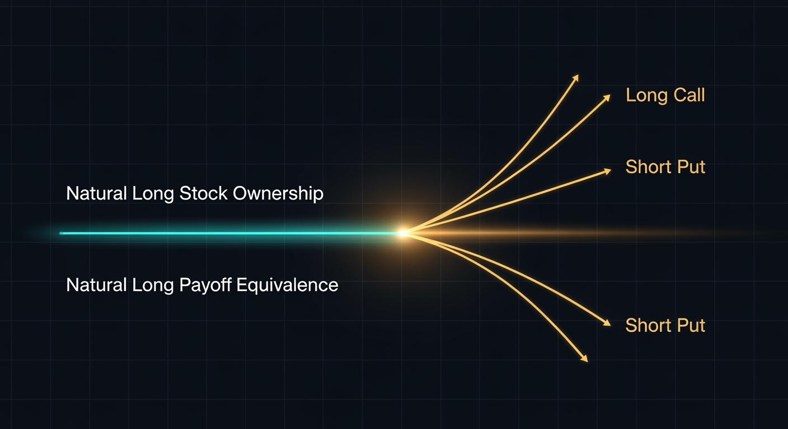

Options Strategies:
Statistical Edge Analysis
A rigorous breakdown of systematic options trading strategies designed to harvest the Volatility Risk Premium, theta decay, and implied volatility mean reversion — backed by decades of empirical research.
Options Trading: A Foundational Primer
Before advancing into systematic volatility harvesting strategies, a rigorous understanding of derivative contract mechanics, pricing theory, and the Greeks is essential. This primer covers the mandatory foundational mechanics — from contract anatomy and moneyness through the four basic architectures, pricing surfaces, and execution microstructure.
Options are non-linear, time-bounded derivative contracts that operate on entirely different structural and mathematical foundations from equity ownership. They do not confer voting rights or dividend entitlements — instead, they offer highly complex payoff distributions that allow practitioners to isolate pure directional movement, implied volatility expansion, or the passage of time itself.
Equity vs. Derivative Contracts
| Feature | Equity Ownership | Derivative Contract (Options) |
|---|---|---|
| Fundamental Nature | Fractional ownership stake in a corporate entity | Financial contract deriving value from an underlying asset |
| Duration | Perpetual — no expiration date | Finite lifespan — expires on a predetermined date |
| Rights Conferred | Voting rights, dividend entitlements, asset claims | Conditional right or obligation to buy/sell the underlying |
| Capital Efficiency | Low — requires full cash value or 50% Reg-T margin | High — requires only option premium or margin for naked sales |
| Payoff Structure | Linear — 1:1 correlation with share price | Non-linear — exhibits convexity from fixed strikes and time decay |
Anatomy of the Standardized Option Contract
- Underlying Asset: The specific security (stock, ETF, index) upon which the option is written. Its real-time price is the primary dynamic input for valuation models.
- Strike Price: The exact, fixed price at which the option buyer may execute their right to buy or sell the underlying. Remains permanently fixed through the contract's life (adjusted only for corporate actions by the OCC).
- Expiration Date: The precise moment the contract ceases to exist. If conditions for exercise are not met, the option expires entirely worthless — a 100% loss of premium for the buyer.
- Premium & Contract Multiplier: The market price of the contract. For standardized U.S. equity and ETF options, the multiplier is invariably 100 — one contract represents 100 shares. A $4.00 quoted premium requires a $400 capital outlay per contract.
Moneyness: ITM, ATM, OTM
- In-the-Money (ITM): Exercising immediately yields positive gross cash flow — call: spot > strike; put: strike > spot. Contains both intrinsic value and extrinsic value. High absolute delta. Trades closest to underlying on a dollar-for-dollar basis.
- At-the-Money (ATM): Spot ≈ strike. The mathematical inflection point of the chain. Zero intrinsic value but the highest concentration of extrinsic time value on the entire chain. Most sensitive to IV changes and theta decay.
- Out-of-the-Money (OTM): Exercising immediately yields a loss — call: spot < strike; put: spot > strike. Contains zero intrinsic value — premium is 100% extrinsic. Cheapest contracts, highest leverage, highest statistical probability of expiring worthless.
The entire derivatives market, regardless of strategy complexity, is constructed from four elementary building blocks. Every multi-leg spread — strangles, iron condors, butterflies — is a combination of these four base positions.
Long Call — Bullish
- Right to buy the underlying at the strike price prior to expiration.
- Max Loss: Premium paid (100% of capital deployed) — strictly defined, never more.
- Max Profit: Unlimited — no mathematical cap on upside appreciation.
- Breakeven: Strike + Premium paid.
- Profits if the underlying rises significantly above the strike before expiration. A wasting asset — time works against the buyer every day.
Short Call — Bearish / Neutral
- Obligation to sell the underlying at the strike price if assigned by the buyer.
- Max Profit: Premium received upfront — the absolute ceiling of reward.
- Max Loss: Unlimited — the underlying can theoretically rise to infinity.
- Breakeven: Strike + Premium received.
- Profits if the underlying remains below the strike through expiration. Theta works in the seller's favor daily.
Long Put — Bearish
- Right to sell the underlying at the strike price prior to expiration.
- Max Loss: Premium paid — strictly defined, never more.
- Max Profit: Substantial but capped — achieved if the underlying falls to zero: (Strike × 100) − Premium paid.
- Breakeven: Strike − Premium paid.
- A capital-efficient alternative to short-selling the underlying stock outright. No margin loan, no borrow costs.
Short Put — Bullish / Neutral
- Obligation to buy the underlying at the strike price if assigned by the buyer.
- Max Profit: Premium received upfront — the absolute ceiling of reward.
- Max Loss: Substantial — equal to (Strike × 100) − Premium received, if the underlying goes to zero.
- Breakeven: Strike − Premium received.
- The foundational building block of the Volatility Risk Premium harvesting strategies that follow. Theta accrues to the seller daily.
Every option premium consists of two mathematically distinct components. Understanding their individual dynamics — and how implied volatility warps them — is the core pricing insight that separates systematic traders from directional speculators.
Premium Components
Historical Volatility vs. Implied Volatility
Historical Volatility (HV)
- A strictly backward-looking statistical metric.
- Calculated as the annualized standard deviation of daily logarithmic returns over a defined past period.
- Reflects the asset's actual, recorded price dispersion — the factual baseline for normal market behavior.
- Used as a critical input for setting stop-loss levels, position sizing, and risk parameters.
- Also known as Realized Volatility (RV).
Implied Volatility (IV)
- An entirely forward-looking construct — derived by reverse-engineering the option pricing model from current market premiums.
- Represents the market's aggregate expectation of future price movement over the remaining life of the option.
- Functions as a real-time proxy for market sentiment and fear — rises sharply before earnings, macro events, and geopolitical shocks.
- The VIX measures the 30-day IV of a wide strip of S&P 500 options — the equity market's "fear gauge."
Volatility Surface Anomalies
Volatility Smile
- A U-shaped curve that emerges when plotting IV against strike prices for a specific expiration.
- Both deep OTM and deep ITM options command significantly higher IV than ATM options.
- Highly prevalent in currency options and short-term equity options.
- Proves the market assigns far higher probability to extreme outlier moves than a normal distribution predicts — a direct acknowledgment of fat tails in asset returns.
Volatility Skew
- A pronounced asymmetric tilt to the IV curve — almost universally negative (left-tailed) in modern equity markets, especially post-1987.
- OTM puts trade at significantly higher IV than equidistant OTM calls because of inelastic institutional demand for downside portfolio protection.
- When markets drop rapidly, hedging demand intensifies, further steepening the skew.
- Commodities skew positively — supply shocks can cause theoretically unbound price spikes, so OTM calls command elevated IV.
- This structural put premium is the specific anomaly exploited by Jade Lizard strategies.
The Greeks are the partial derivatives of the option pricing model — they isolate exactly how an option's theoretical price reacts to a unit change in a specific external variable. Mastering them is the prerequisite for constructing, hedging, and managing complex portfolio exposures in a non-linear payoff environment.
Delta (Δ) — Directional Exposure
- Measures the expected change in option premium for a $1 move in the underlying. Call deltas range 0 to +1.0; put deltas range −1.0 to 0.
- ATM options exhibit |Δ| ≈ 0.50. Deep ITM options approach |Δ| = 1.0 and move dollar-for-dollar with the underlying.
- For market makers, Delta is the hedge ratio — the exact number of shares required to maintain delta neutrality.
Gamma (Γ) — Convexity & Acceleration
- Measures the rate of change in Delta for every $1 move in the underlying. If Delta is "speed," Gamma is "acceleration."
- Peaks for ATM options near expiration — as time compresses, an ATM option's delta can violently snap between 0 and 1.0 on fractional tick movements ("Gamma explosion").
- Gamma Scalping: A long ATM straddle is long Gamma. As the underlying oscillates, delta changes continuously. The market maker must buy the underlying when it falls and sell when it rises to restore delta neutrality — a mechanical "buy low, sell high" process that generates profits designed to offset the straddle's theta decay. This is foundational to quantitative volatility arbitrage.
Theta (Θ) — Time Decay
- Quantifies the expected daily reduction in an option's extrinsic value, all else equal. A negative force for buyers, a positive force for sellers.
- The decay curve is exponential, not linear. For ATM options, decay accelerates dramatically in the final weeks and days before expiration.
- For deep ITM and deep OTM options, the theta curve flattens near expiration — the probability cone has already collapsed past their strikes, leaving almost no extrinsic value to decay.
Vega (ν) — Volatility Sensitivity
- Measures the change in an option's price for a 1% change in implied volatility. Unlike Delta/Gamma/Theta, Vega responds to the market's fluctuating expectation of future turbulence — not underlying price movement or time.
- Highest for longer-dated ATM options — more time means more opportunity for future volatility to influence the probability distribution.
- Long options are long Vega (benefit from IV expansion). Short options are short Vega (damaged by IV spikes).
- Managing Vega risk is central to preventing catastrophic portfolio losses when macroeconomic fear triggers systemic IV spikes.
- Advanced Greeks: Vanna (∂Δ/∂σ) and Charm (∂Δ/∂t) are used by institutional desks to model complex dealer hedging flows and gamma exposure levels (GEX/DEX) across the market.
Every options transaction requires a specific order designation informing the clearinghouse whether a position is being initiated or liquidated. Separately, the exercise style of the option (American vs. European) governs when those rights may be invoked — with substantial consequences for option sellers.
Order Flow Designations
| Designation | Meaning | Function | Subsequent Closing Action |
|---|---|---|---|
| BTO | Buy to Open | Initiates a long position. The trader pays a premium to acquire rights. | STC (Sell to Close) |
| STO | Sell to Open | Initiates a short position (writing). The trader collects a premium and assumes obligations. | BTC (Buy to Close) |
| STC | Sell to Close | Liquidates an existing long position. The trader relinquishes their rights to realize a gain or loss. | N/A — closes the position |
| BTC | Buy to Close | Liquidates an existing short position. The trader buys back the contract to extinguish their obligations. | N/A — closes the position |
American vs. European Exercise Style
European-Style Options
- Can only be exercised at the precise moment of expiration — no early exercise rights.
- Generally easier to price mathematically; avoids the complexity of an early exercise premium.
- The vast majority of broad-market index options are European-style: SPX (S&P 500), XSP (Mini-SPX), NDX (Nasdaq-100).
- Cash-settled: No physical delivery of shares — the contract settles in cash based on the difference between the index level and the strike at expiration.
- No early assignment risk for option sellers — a significant structural advantage.
American-Style Options
- Afford the buyer the right to exercise at any point prior to expiration, up to and including the expiration date.
- All standard U.S. individual equity and ETF options (AAPL, SPY, QQQ, etc.) are American-style.
- Physically settled: Actual underlying shares must be exchanged upon exercise.
- For option sellers, American-style mechanics introduce Early Assignment Risk — the risk of being randomly assigned an exercise notice unexpectedly prior to expiration, triggering potential margin calls or forced stock borrow.
While it is theoretically inefficient to exercise an option early — because doing so destroys any remaining extrinsic time value — two precise mathematical exceptions exist where early exercise becomes optimal for the holder, creating systematic assignment risk for short sellers.
Dividend Early Exercise Boundary — Short Calls
- Condition: The pending dividend payout is mathematically greater than the remaining extrinsic (time) value of the corresponding ITM call option.
- On the ex-dividend date, the stock price artificially drops by the exact dividend amount. The call holder who exercises early captures the underlying shares in time to collect the dividend, forfeiting negligible time value in exchange for superior cash income.
- Consequence for short sellers: Traders holding short ITM calls on dividend-paying equities face extreme assignment risk the day prior to the ex-dividend date.
- Mitigation: Roll the short call out in time or up in strike to increase extrinsic value before the ex-date. Alternatively, buy back the short call entirely to prevent being forced to pay the dividend out of pocket to the counterparty.
Deep ITM Put — Cost-of-Carry Boundary
- Condition: The risk-free interest rate that could be earned on the cash proceeds of exercising the put (receiving the strike price immediately) exceeds the negligible remaining time value in the deep ITM put.
- When a put is deep ITM, its delta approaches −1.0 and its extrinsic value decays to nearly zero. Exercising delivers cash equal to the strike price instantly.
- If the risk-free interest yield on that cash over the remaining contract life exceeds the put's remaining time premium, early exercise is mathematically optimal.
- This establishes a calculable Early Exercise Premium (EEP) that makes American puts structurally more valuable than comparable European puts when interest rates are elevated.
Max Pain Theory
- Hypothesizes that the underlying stock price will gravitationally drift toward the specific strike price that causes the highest total dollar value of outstanding options (calls and puts combined) to expire worthless.
- This strike minimizes the total financial payout required from option writers — predominantly institutional market makers and dealers.
- Not manipulation — a natural, structural byproduct of mechanical delta hedging by dealers maintaining delta-neutral portfolios across massive short option inventories.
Price Pinning at Expiration
- As expiration approaches and Gamma explodes, dealer hedging flows create massive opposing pressures around heavily trafficked open interest strikes.
- If the stock drops slightly below the major strike, dealers must buy the stock to hedge their changing deltas. If it rises slightly above, they sell. This reflexive, continuous hedging activity traps the underlying.
- The result: the underlying "pins" to the max pain strike as the closing bell rings on expiration Friday — a predictable microstructure phenomenon exploitable by systematic options sellers who close positions before the final hours.
Theoretical Basis of Options Alpha
Systematic options trading exploits three persistent structural anomalies in financial markets: the Volatility Risk Premium, the non-linear acceleration of theta decay, and the mean-reverting nature of implied volatility. Understanding these mechanics is the prerequisite for every strategy that follows.
Volatility Risk Premium (VRP)
Option implied volatility systematically overstates subsequent realized volatility. Options function as financial insurance — buyers consistently pay above fair value to hedge tail risk, creating a persistent structural premium for sellers.
Theta Decay Acceleration
Option premiums consist of intrinsic and extrinsic value. Extrinsic value erodes to zero at expiration along a non-linear, accelerating curve — not linearly. The zone between 45 and 21 DTE captures the steepest decay per dollar at risk.
IV Mean Reversion
Implied volatility is a bounded metric — unlike equity prices, volatility cannot rise to infinity or fall below zero. Periods of extreme IV expansion are predictably followed by contraction ("IV crush"), generating alpha even if the underlying is stationary.

The IV Rank (IVR) measures current IV as a percentile of its 52-week range, providing a normalized signal for when conditions favor short-premium strategies.
Short Strangles & Short Straddles
The purest structural forms of short-volatility, non-directional trading. Designed to harvest the Volatility Risk Premium and theta decay while maintaining a delta-neutral posture at entry.

- Short Straddle: simultaneously sell an ATM call and ATM put at the identical strike and expiration — maximum extrinsic premium, narrowest breakeven range.
- Short Strangle: sell an OTM call and OTM put — wider breakeven tent, lower absolute credit but higher probability of profit.
- Optimal Setup: target the 15–20 delta strikes on both sides at approximately 45 DTE.
- Selling at 15–20 delta places strikes precisely at the 1-standard-deviation expected move boundary priced by the market.
- Both are undefined risk positions: max theoretical loss is unlimited on the call side, substantial on the put side.
- Positions are delta-neutral at entry but will accumulate directional delta as the underlying moves.
At a 16-delta strangle configuration, the purely statistical probability of the underlying remaining within the short strikes at expiration is approximately 68%. However, because the VRP dictates that the market systematically overprices volatility, the empirical win rate over thousands of occurrences is substantially higher.
- As long as realized volatility (RV) < implied volatility (IV) priced into sold options, the position profits through theta decay and vega contraction simultaneously.
- Theta acceleration is most capital-efficient in the 45 DTE → 21 DTE window.
- Historical 45 DTE 16-delta SPY strangles: median P/L ≈ 50% of initial credit when managed at 21 DTE.
- Deep OTM call options generate an average return of −73 bps/day for buyers, directly benefiting sellers.
- Exclusively optimal in high IV environments (IVR > 50) — inflated premiums allow selling strikes far from current price while collecting superior credit.
- In elevated IV, the breakeven tent widens significantly compared to a low-IV environment for the same credit collected.
- Short straddles are specifically favored in range-bound, sideways markets where IV is artificially elevated but directional movement is expected to be minimal.
- Short strangles are more forgiving of mild directional drift and are the workhouse strategy for systematic premium sellers.
- Avoid deploying in low-IV environments — the premium collected is insufficient to justify the undefined-risk capital requirement.
- Profit Target: close at 50% of max credit — the capital required to hold for the final 50% of profit is mathematically inefficient.
- Time Management: universally close or roll at 21 DTE to eliminate escalating gamma risk in the final expiration weeks.
- Defense — Roll Untested Side: if the short call is breached by a rising market, roll the untested short put up to a higher strike to collect additional credit and reduce net delta.
- Trigger for rolling: delta differential between call and put legs exceeds 0.15, or tested side approaches 0.50 delta.
- Reg-T Margin (BPR): approximately 20% of underlying notional value — capital intensive, suppressing ROC.
- Portfolio Margin: recognizes dual-sided hedging, reducing BPR by approximately 30% vs. Reg-T.
- Historical average ROC: approximately 6% per trade under Reg-T rules on SPY strangles.
Jade Lizards & Twisted Sisters
Asymmetric, slightly directional strategies engineered to harvest volatility skew anomalies while entirely eliminating risk on one specific side of the market. The Jade Lizard exploits the persistent overpricing of OTM puts relative to equidistant OTM calls.
- Jade Lizard: sell an OTM put (naked) + sell an OTM call spread (short call + long higher-strike call) — all in the same expiration cycle.
- Non-Negotiable Rule: total net credit collected must be strictly greater than the maximum width of the short call spread. This guarantees zero upside risk.
- Twisted Sister: the exact inverse — sell an OTM naked call + sell an OTM put spread. Only viable when OTM calls trade richer than equidistant OTM puts (inverted skew).
- Inverted skew is exceedingly rare in broad market equities — typically isolated to violent short-squeeze scenarios, specific commodities, or targeted biotech events.
- The Jade Lizard carries a slightly bullish bias due to the naked short put component.
The mathematical edge lies in exploiting the volatility skew — in equity markets, OTM puts systematically trade at a premium to equidistant OTM calls. This pricing disparity exists because institutional investors fear rapid violent market crashes far more than equivalent rallies; the historical velocity of downside moves is exponentially higher than the upside grind.
- The inflated put premium finances the short call spread such that total credit exceeds the call spread width — resulting in zero theoretical upside risk.
- If the underlying rallies to infinity, the call spread reaches max loss, but the excess put credit perfectly covers it, resulting in a scratch or net profit.
- The only actual risk assumed is to the downside — mirroring a naked short put but with significantly more initial credit.
- Historical win rate clusters in the 75%–85% range depending on delta selections at entry.
- Exceptional in high IV + steep downside skew environments.
- Particularly effective around earnings announcements where call-side IV may be briefly inflated, allowing the call spread to be sold for premium.
- Requires a slightly bullish or neutral directional assumption (naked put component).
- Twisted Sister is mathematically unviable in normal conditions — only deploy when inverted skew is confirmed (unusual commodity markets, biotech binary events, squeeze dynamics).
- Upside: zero risk if construction rules are followed — hold to expiration for guaranteed net credit regardless of how far the underlying rallies.
- Downside: naked put risk — undefined loss if underlying collapses toward zero (practically, the loss potential mirrors a standalone naked put).
- Defense: if the stock drops, roll the short call spread down in strike to collect additional credit, lowering the cost basis and expanding the downside breakeven threshold.
- Margin (BPR): identical to the margin required for the naked short put alone — the call spread side is assessed zero additional margin (it is fully financed and risk-free).
- Markedly higher capital efficiency and ROC compared to a standalone short put for the same capital outlay.
Iron Condors & Iron Butterflies
Defined-risk vehicles for harvesting the Volatility Risk Premium within IRA accounts or capital-restricted environments. The purchased wings cap the maximum loss, sacrificing a calculated portion of premium for catastrophic tail-risk protection.
- Iron Condor (4 legs): short OTM put spread + short OTM call spread, same expiry. Long wings definitively cap maximum loss.
- Iron Butterfly: identical mechanics but short strikes moved to the ATM line — effectively selling an ATM straddle coupled with OTM protective wings.
- Optimal Wingspan: approximately 1/10th of the underlying asset's current price — empirically validated as the sweet spot between credit collected and tail protection cost.
- Wider wings: position behaves closer to a naked strangle — higher credit, faster theta, superior long-term win rates.
- Narrow wings: lower credit, cheaper entry, but easily breached and limited theta capture.
- IRA and restricted account friendly — no naked options exposure.
Both strategies retain the core VRP edge but must purchase tail-risk insurance via the long wings, reducing net premium collected. The balance between credit received and the "volatility drag" cost of the wings is the primary determinant of long-term edge.
- 35-year CNDR Index study (1986–2015): Iron Condor model (sell 20-delta put/call, buy 5-delta wings) produced annualized std dev of only 7.23% vs. S&P 500's 14.93%.
- CNDR: only 10 months with drawdowns exceeding 6% over 35 years, vs. S&P 500's 15 such months.
- Iron Butterfly (BFLY): only 2 months of losses exceeding 6% over the same period.
- Optimal when IVR > 50 — significant IV crush anticipated from inflated option premiums.
- Requires a strictly neutral or range-bound directional assumption.
- Iron Condors: suitable for broad market indices where minor directional drift is tolerated.
- Iron Butterflies: require near-stationary underlying to realize peak profitability — highly sensitive to sudden directional expansion beyond the ATM short strikes.
- Max Loss: spread width minus net credit received — quantified exactly at order entry, no surprises.
- Profit Target — Iron Condor: close at 50% of max credit.
- Profit Target — Iron Butterfly: close at 25% of max credit — the extreme difficulty of capturing the pinpoint ATM peak makes 25% the mathematically sound target.
- Defense: roll the untested, profitable spread closer to the current price to collect additional credit, directly offsetting the loss on the breached side.
- BPR: equal to max loss of the widest spread — only 5–30% of the capital required for a comparable naked strangle position.
- Substantially lower absolute dollar profit per trade vs. naked strangles, offset by dramatically higher capital efficiency percentage.
Broken Wing Butterfly (BWB)
An advanced structural evolution of the standard butterfly that transforms a debit-based, low-probability trade into a net-credit, high-probability volatility strategy by deliberately shattering strike-width symmetry to eliminate risk on one entire side of the market.
- Standard Butterfly: buy 1 ITM/ATM option, sell 2 ATM/OTM options, buy 1 further OTM option — all equidistant widths. Results in net debit. Requires near-exact pin of short strikes at expiration for profit.
- Broken Wing Butterfly: move the furthest OTM long option even further OTM, creating an unbalanced structure. The credit spread side becomes wider than the debit spread side.
- This asymmetry allows the entire 4-leg structure to be established for a net credit rather than a net debit.
- Put BWB: deployed below the market with the broken wing on the downside — implies a mildly bullish to neutral bias.
- Call BWB: deployed above the market with the broken wing on the upside — implies a mildly bearish to neutral bias.
By routing the trade for a net credit, the trader completely eliminates risk on one entire side. If the underlying moves violently away from the broken wing direction, the structure expires worthless and the initial credit is retained as pure profit — no management required.
- Exhaustive DE (Differential Evolution) optimization studies on 10+ years of SPY options data confirm statistical dominance of the credit-routed BWB structure.
- BWB provides higher theta decay profile and lower directional delta footprint vs. standard unbalanced butterfly.
- Three possible outcomes: (1) high-probability small win — market moves away from broken wing, keep credit; (2) low-probability large win — underlying pins exactly at short strikes, maximum value realized; (3) defined maximum loss — underlying violently breaches broken wing strike.
- Deploy in high IV environments where option premium is sufficiently rich to facilitate the wide skip-strike mechanics needed to generate a net credit at entry.
- If IV is too low, the skip-strike adjustment cannot generate enough credit to overcome the cost of the debit spread — the BWB degrades to a net debit structure and loses its statistical advantage.
- Put BWB: mildly bullish to neutral market assumption.
- Call BWB: mildly bearish to neutral market assumption.
- Max Loss: triggered if the underlying completely blows past the broken wing strike prior to expiration — defined and quantified at entry.
- Max loss = width of the broken (wider) credit spread minus the net credit received.
- Profit Target: close the entire structure at 50% of maximum theoretical profit — typically when the closest long option goes slightly ITM as expiration approaches.
- Defense: close the profitable long debit spread component and roll the remaining short credit spread further out in time to collect additional premium and defend the strike.
- Margin (BPR): equal to the width of the broken credit spread minus net credit received — highly capital efficient relative to naked options.
Calendar & Diagonal Spreads
These strategies pivot the focus away from vertical volatility skew and instead exploit the term structure of volatility — capitalizing on differential theta decay rates between sequential expiration cycles and IV mean reversion dynamics. Critically, these are deployed in low IV environments, opposite to most premium-selling strategies.
- Calendar Spread: sell a near-term option (30–45 DTE) + buy a longer-term option (60–90 DTE) at the exact same strike price. Always established for a net debit.
- Diagonal Spread: same temporal mechanics but with different strike prices — a hybrid between a calendar and a vertical spread.
- Most common diagonal: buy a deep ITM LEAPS contract (long duration), repeatedly sell near-term OTM options against it — the Poor Man's Covered Call (PMCC).
- Setup Rule: net debit paid must never exceed 75% of the total strike width to ensure positive theoretical max profit.
- Critical Warning: never trade calendars or diagonals in volatility products (e.g., VIX options) — each expiry is an independent underlying asset, rendering theoretical max loss undefined.
The primary edge is the direct exploitation of the theta decay curve: the near-term short option decays faster than the long-term option backing it, generating a credit differential that compounds over each cycle.
- Calendar spreads are pure extrinsic value trades — intrinsic value cancels out at the shared strike.
- Structurally long vega: the position profits from any expansion in overall market implied volatility (IV expansion = long option gains more value than short option).
- Diagonals introduce heavy delta exposure — directional bias finances the long-duration LEAPS through consecutive near-term option sales.
- Target return: 10%–25% on the initial net debit paid. Attempting to hold for larger gains significantly reduces win rate.
- Calendar Spreads MUST be deployed in low IV (IVR < 25) — this is the opposite of most premium-selling strategies and a critical distinction.
- Low IV entry allows the trader to benefit from the statistical mean reversion back toward historical IV norms — the long vega position profits as IV expands.
- Entering a calendar during IV contraction severely damages the position: the long option loses premium rapidly, eroding the position value before theta collection can compensate.
- Diagonal Spreads: deploy when holding a strong directional conviction but wishing to reduce localized cost basis and limit capital risk vs. owning 100 shares outright.
- Max Loss: strictly capped at the initial net debit paid — no hidden risks.
- Max profit cannot be precisely calculated at entry due to fluctuating forward volatility curves and unpredictable term structure shifts across expiry cycles.
- Defense for Diagonals: if the underlying moves against the directional assumption, roll the short option closer to the current price to collect more premium, reducing the overall breakeven.
- BPR: equal to the net debit paid — exceptionally capital efficient. One of the most accessible structures for small or IRA accounts.
- No naked options in either structure — fully defined risk from entry.
Naked Put Selling & Covered Strangles
The primary methodology for blending core equity ownership mechanics with the persistent yield-generating alpha of the Volatility Risk Premium. The short put is arguably the most capital-efficient single-instrument vehicle for VRP harvesting — empirically validated by 32 years of the Cboe PUT Index data.
- Naked Short Put: write a put option contract without shorting underlying stock — generates immediate upfront cash credit.
- Cash-Secured Put: retain 100% of capital required to take assignment (strike price × 100 shares) as collateral against the short put.
- Naked Put (Reg-T): only ~20% of underlying notional required, providing theoretical 5x leverage.
- Covered Strangle: own 100 shares of the underlying + simultaneously sell an OTM covered call + sell an OTM naked put in the same expiry. Aggressive double-sided premium collection.
- Critical Risk (Covered Strangle): the short put is NOT covered by the long stock. Below the put strike, losses compound: $2 lost for every $1 the underlying falls below the put strike.
The short put is structurally identical to a covered call — both have strictly limited upside (strike + premium) and identical downside risk. However, the short put is mathematically superior on every transaction efficiency metric.
- Single transaction vs. two (stock purchase + call sale). Tighter bid-ask spreads. No dividend taxation or assignment inefficiencies.
- Cboe PUT Index (32-year study): 9.54% CAGR vs. SPX 9.80%, but with dramatically lower volatility.
- PUT Index annualized std dev: 9.95% vs. S&P 500's 14.93%.
- Sharpe Ratio: PUT Index 0.65 vs. S&P 500's 0.49 — superior risk-adjusted returns for 32 years.
- During the 2008 financial crisis, the PUT Index exhibited vastly superior downside protection vs. the equity market — not through hedging, but through continuous collection of massively inflated VRP.
- Naked Puts: excel in neutral-to-bullish market regimes with elevated implied volatility (IVR > 50).
- Unlike the delta-neutral strangle, a standalone short put leaves the trader fully exposed to downside equity correlation — it is a directionally committed (bullish) position.
- Covered Strangle: strictly an aggressive asset accumulation strategy for strongly bullish, capital-rich investors seeking to lower cost basis on dividend-paying blue-chip equities or broad index ETFs.
- Covered strangle requires fully welcoming potential dual assignment (being called away on shares AND assigned additional shares via the put).
- Max Loss: underlying falls to zero — substantial but mathematically defined. Practically managed via rolling.
- Defense: if the short strike is breached, roll the put further OTM and further out in time for a net credit — delays assignment indefinitely while capturing additional extrinsic value.
- Covered Strangle — Call Breach: shares called away at max profit — welcomed outcome.
- Covered Strangle — Put Breach: accept assignment, doubling equity exposure at a substantially lower effective cost basis.
- Capital Requirements: Cash-secured = 100% notional. Naked (Reg-T) = ~20% notional. Covered strangle = 100% stock capital + ~20% put margin.
- Covered Strangle ROC: approximately 0.68% — the massive capital drag from holding 100 shares destroys capital efficiency despite the dual premium collection.
Put-Call Parity & Theoretical Basis
Synthetic options strategies leverage the no-arbitrage relationships between underlying assets and their corresponding options to emulate the exact risk, reward, and cash flow profiles of natural positions using alternative derivative combinations. The entire edifice rests on a single theorem enforced continuously by quantitative market makers.
Put-Call Parity
For European options, put-call parity defines the mandatory pricing equilibrium that must exist between a call option, a put option, the underlying asset, and a risk-free bond. A portfolio consisting of a long call and a short put at the same strike and expiration has the exact same return profile as a forward contract on the underlying.
K = Strike price | r = Risk-free rate | T = Time to expiry
If this parity is ever violated, market participants can execute riskless arbitrage to extract guaranteed profits until the market returns to equilibrium. This enforcement is continuous and is the reason synthetic positions mirror natural positions precisely.
The Equation of Three
In institutional trading, put-call parity is operationalized through the "Equation of Three." Any financial position involving an underlying stock, a call, and a put can be perfectly replicated if a trader holds any two of the three instruments — the third is always implied.
- ▸ Synthesize a Call: Long Stock + Long Put
- ▸ Synthesize a Put: Long Stock + Short Call
- ▸ Synthesize the Spot: Long Call + Short Put
Market makers utilize mental compression to rapidly identify arbitrage opportunities — perceiving these relationships as pure logic rather than cumbersome algebra. The key heuristic: the extrinsic value of an ITM call must equal the price of the corresponding OTM put plus the cost of carry.
Synthetic Stock & Option Positions
By combining stocks, calls, and puts in prescribed ways, traders can perfectly replicate the delta, payoff, and risk profile of any natural position. These synthetics are deployed to gain exposure without the full capital outlay of stock ownership, bypass hard-to-borrow constraints, or isolate specific Greek exposures with greater capital efficiency.

Synthetic Long Stock
- Construction: Long ATM Call + Short ATM Put (same strike, same expiry)
- Payoff: Identical to owning 100 shares — unlimited upside, substantial downside.
- Breakeven: Strike price ± net debit paid or credit received.
- Primary Use: Bullish exposure with dramatically reduced upfront capital vs. buying shares outright. Functions as a synthetic forward contract.
- Max Profit: Unlimited. Max Loss: Strike minus net debit (if stock → zero).
Synthetic Short Stock
- Construction: Long ATM Put + Short ATM Call (same strike, same expiry)
- Payoff: Replicates a short-selling position exactly — profits point-for-point as the underlying declines.
- Max Profit: Strike minus net debit (stock → zero). Max Loss: Unlimited (stock can rise indefinitely).
- Primary Use: Bearish exposure on Hard-to-Borrow (HTB) equities where physical shares are unavailable or carry exorbitant borrow fees. The synthetic bypasses the borrow market entirely.
- HTB borrow costs are naturally priced into the options via put-call parity — puts will trade at a massive premium to calls in HTB names.
Bullish Risk Reversal (Split-Strike Synthetic Long)
- Construction: Short OTM Put + Long OTM Call (different strikes)
- Not a pure 100-delta equivalent — a "dead zone" exists between the strikes where P&L is flat.
- Capitalizes on volatility skew — OTM puts trade richer than equidistant OTM calls, so the put sale finances the call purchase.
- Still carries substantial downside risk via the short put — not "zero cost" in terms of risk.
Protective Collar
- Construction: Long Stock + Long OTM Put + Short OTM Call
- Combines natural stock ownership with a synthetic short stock overlay.
- Sacrifices extreme upside (capped by the short call) to completely define downside risk (floored by the long put).
- If the short call premium exactly offsets the long put cost: zero-cost collar — full downside protection at no out-of-pocket premium.
Synthetic Long Call (Married Put)
- Construction: Long Stock + Long Put
- Payoff: Limited downside (floored at put strike) with theoretically unlimited upside. Geometrically identical to a long call.
- Primary Use: Investors holding long equity positions anticipating short-term turbulence can synthesize a long call to retain dividend and voting rights while instituting a hard floor on equity losses.
- Max Loss: Cost of stock + Put Premium − Strike Price.
Synthetic Short Put (Covered Call)
- Construction: Long Stock + Short Call
- Payoff: Limited profit (capped at short call strike + premium) with substantial downside below the stock's cost basis. Geometrically identical to a naked short put.
- Primary Use: Yield generation. Captures dividends and voting rights while harvesting volatility premiums and capping upside.
- Max Profit: Call Premium + (Strike − Purchase Price). Max Loss: Purchase Price − Call Premium.
Synthetic Long Put
- Construction: Short Stock + Long Call
- Payoff: Limited risk to the upside (capped by the call) with substantial profit potential to the downside.
- Primary Use: Allows traders to short a stock while definitively capping maximum risk in the event of an unexpected upside rally or short squeeze.
- Max Profit: Short Sale Price − Call Premium (if stock → zero). Max Loss: Strike − Short Sale Price + Call Premium.
Synthetic Short Call
- Construction: Short Stock + Short Put
- Payoff: Capped upside profit with unlimited downside risk if the stock rallies sharply.
- Primary Use: Executed when an investor wishes to mimic a naked short call but seeks to capitalize on an overvalued put premium or construct the position utilizing an existing short stock position.
- Max Profit: Put Premium + (Short Sale Price − Strike). Max Loss: Unlimited.
Standard long straddles and strangles profit from explosive expansion in realized volatility regardless of direction. These same payoff profiles can be synthetically replicated using combinations of stock and options — allowing traders to alter margin requirements, capture dividends, or isolate specific Greek exposures.
Long Put Synthetic Straddle
- Construction: Long 100 Shares + Long 2 ATM Puts
- The first put mathematically combines with the long stock to synthesize a long call. The second put acts as the standard put leg.
- Payoff: Matches a standard long straddle exactly — limited loss at the strike, unlimited profit potential in both directions.
- Often preferred because the long underlying position may capture dividends and is generally easier to execute than short-selling stock.
Short Call Synthetic Strangle
- Construction: Long 100 Shares + Short 1 OTM Call + Short 1 higher-strike OTM Call
- The stock and the lower-strike short call synthesize a short put. The higher-strike short call remains as the naked call leg.
- Payoff: Perfectly mirrors a standard short strangle — profits from sideways consolidation and volatility contraction, carries unlimited risk if the underlying moves sharply in either direction.
- Allows premium sellers to harvest the VRP while maintaining a long underlying position for dividend capture.
The most compelling argument for synthetic structures is capital efficiency. A comparative analysis of a $100 stock — where an investor seeks 100-delta bullish exposure to 100 shares — illustrates the stark disparity in capital requirements:
| Attribute | Natural Long Stock (100 Shares) | Synthetic Long Stock (Long Call + Short Put) |
|---|---|---|
| Capital Outlay (Reg-T) | 50% of Notional ($5,000 per $10k) | ~20% of Underlying + Net Premium |
| Capital Outlay (Portfolio Margin) | 15% of Notional ($1,500 per $10k) | Equivalent theoretical max loss (~$1,500) |
| Dividend Rights | Owner receives all discrete dividends | None — dividends priced into option premiums |
| Voting Rights | Full shareholder proxy voting rights | None |
| Borrowing Costs | Subject to standard broker margin loan rates | Implied synthetic rates; avoids standard margin interest |
| Expiration Constraints | Perpetual holding period (no expiration) | Bound by the maturity date of the option contracts |
Conversions, Box Spreads & Jelly Rolls
When put-call parity equations become unbalanced due to market inefficiencies, volatility dislocations, or term-structure anomalies, institutional quantitative desks deploy multi-leg arbitrage strategies to extract risk-free profits. These structures are entirely delta-neutral — their edge lies in capturing pricing discrepancies, not directional movement.
Conversions
- Construction: Long Stock + Short Call + Long Put (same strike K, same expiry)
- Creates a synthetic short position against a natural long stock position.
- Executed when options are mispriced such that the synthetic short trades at a premium to the natural stock.
- The payoff is entirely locked: no matter where the stock settles at expiration, the trader delivers shares for exactly K.
- Profit condition: Net credit received exceeds the theoretical cost of carrying the trade to expiration.
- The locked payoff means the position is immune to all subsequent market movement — pure riskless arbitrage.
Reversals
- Construction: Short Stock + Long Call + Short Put (same strike K, same expiry)
- The exact inverse of a conversion. Pairs a natural short stock position with a synthetic long stock overlay.
- Executed when synthetic long positions are artificially inflated relative to the underlying.
- Locks in the purchase price of the stock, securing arbitrage profits if the net debit is less than the theoretical forward carrying cost.
- Structurally eliminates all market risk — the position is delta-zero, gamma-zero, and vega-zero at construction.
Box Spreads
- Construction: Long Call (K₁) + Short Call (K₂) + Long Put (K₂) + Short Put (K₁) — a Bull Call Spread overlaid with a Bear Put Spread at identical strikes.
- Achieves the exact outcome of a conversion/reversal but eliminates the need to hold physical stock — highly capital-efficient.
- At expiration, the value is guaranteed to equal exactly K₂ − K₁ regardless of where the underlying settles — making it a proxy for risk-free lending.
- Widely used to secure margin financing at implied rates far below standard broker margin loan rates and to roll forward tax-efficient gains.
- If initiated for a net debit less than the present value of the strike spread at the risk-free rate, an arbitrage opportunity exists.
Jelly Rolls
- Construction: Synthetic Long Stock at near-term expiry (T₁) + Synthetic Short Stock at far-term expiry (T₂), same strike K. Four legs total: Long Call T₁, Short Put T₁, Short Call T₂, Long Put T₂.
- While conversions and box spreads exploit mispricings across strikes within the same expiry, Jelly Rolls target temporal mispricings — arbitraging the term structure of interest rates and dividend expectations across different expiration dates.
- Entirely market-neutral: delta-zero, gamma-zero, vega-zero, and theta-zero. Highly sensitive to rho (interest rates) and phi (dividends).
- Long Jelly Roll: deployed when a trader expects implied dividend pricing to widen vs. projected distributions.
- Short Jelly Roll: deployed when a trader anticipates quick market reversal of the mispricing.
Idiosyncratic Risks of Synthetic Strategies
While the P&L profiles of synthetics mirror their natural counterparts at expiration, the structural inclusion of American-style options introduces critical idiosyncratic risks that have no equivalent in natural positions. These risks must be actively monitored and mechanically managed.
Dividend Risk & Early Assignment
- Holders of American-style options have the right to exercise at any point prior to expiration. For synthetic structures involving short calls (Synthetic Short Stock, Synthetic Short Put / Covered Call), this creates severe dividend risk.
- When an underlying trades ex-dividend, its spot price drops by the exact amount of the dividend. To capture this distribution, the owner of an ITM call may elect early assignment.
- The Threshold Rule: Early assignment is triggered when the impending dividend payment exceeds the remaining extrinsic (time) value of the ITM call option.
- The Consequence: The trader holding the short call leg is forced to deliver 100 shares at the strike price and is legally obligated to pay the dividend to the counterparty — severing the synthetic parity relationship.
- A risk-defined synthetic short put, for example, is suddenly converted into an outright short stock position, exposing the trader to massive unhedged margin requirements.
Pin Risk & Expiration Dynamics
- Pin risk emerges when the spot price of the underlying converges precisely with the strike price of a synthetic structure as expiration approaches.
- The Pinning Phenomenon: Market makers dynamically delta-hedge their vast gamma exposures near major option strikes. This aggressive buying and selling of the underlying "pins" the stock to the strike price at expiration.
- Because option holders have a discretionary window after Friday market close to submit exercise instructions, the synthetic trader cannot definitively know if their short option leg will be assigned.
- Scenario: A trader holding a Synthetic Long Stock (Long $100 Call, Short $100 Put) with the stock closing at $100.01 faces total uncertainty. If the stock drops to $99.99 in after-hours trading, the short put moves ITM and may be aggressively assigned — the trader wakes up Monday unintentionally long 100 shares, exposed to a full weekend of unhedged market risk.
- Mitigation: Close or roll synthetic structures before Friday expiration when the underlying is trading within $0.50 of the short strike.
Margin Frameworks & Capital Efficiency
The true mathematical efficacy of quantitative options trading is measured not by absolute P/L, but by the efficiency with which portfolio capital is deployed. Understanding the structural duality between Regulation-T and Portfolio Margin is critical to assessing long-term strategy viability.
Regulation-T Margin
- Static, fixed-percentage, position-based margining system.
- Evaluates every position in total isolation — no portfolio-level offsets recognized.
- Naked strangle BPR: approximately 20% of underlying notional value.
- Naked strangle BPR is 4–5x higher than the BPR for an identical-width iron condor.
- Artificially suppresses Return on Capital of undefined-risk strategies despite their empirical data superiority.
- Baseline historical SPY strangle ROC under Reg-T: approximately 6% per trade.
- Used as the 6% ROC threshold as a mechanical minimum entry requirement benchmark.
Portfolio Margin (PM)
- Dynamic, purely risk-based system utilizing the Theoretical Intermarket Margining System (TIMS) mandated by the OCC.
- Continuously stress-tests the entire portfolio across 10 equidistant hypothetical price shocks (−20% to +20%) combined with severe IV expansions.
- Natively recognizes mathematical offsets within complex, hedged, delta-neutral portfolios.
- Reduces capital requirement by approximately 30% for identical positions vs. Reg-T.
- Transforms steady, low-yield VRP harvesting into substantial, compounding absolute portfolio growth.
- Generally requires minimum net liquidation value of $125,000 at most brokerages.
Strategy Comparison Matrix
Aggregated structural realities, historical performance metrics, optimal deployment environments, and margin dynamics for all analyzed strategies — a definitive quantitative ranking framework.
| Strategy | Win Rate (POP) | Capital Efficiency | IV Environment | Delta Bias | Primary Edge | Management Trigger |
|---|---|---|---|---|---|---|
| Short Strangle | High (~68–80%) | Low (Reg-T) / High (PM) | High IVR > 50 | Neutral | VRP + Theta | 50% Profit / 21 DTE |
| Short Straddle | Moderate (~50–60%) | Low (Reg-T) / High (PM) | High IVR > 50 + Range-Bound | Neutral | VRP + Maximum Theta | 50% Profit / 21 DTE |
| Jade Lizard | Very High (80%+) | Moderate (= Short Put BPR) | High Skew (Puts > Calls) | Slightly Bullish | Volatility Skew Anomaly | 50% Profit |
| Iron Condor | Moderate (50–65%) | Very High (Defined Risk) | High IVR > 50 | Neutral | VRP (Capped by Wing Cost) | 50% Profit / 21 DTE |
| Iron Butterfly | Moderate (40–55%) | Very High (Defined Risk) | High IVR > 50 | Neutral | VRP (Pinpoint ATM) | 25% Profit |
| Broken Wing Butterfly | High (if credit-routed) | High (Defined Risk) | High (sufficient premium) | Directional | Unbalanced Credit + Theta | 50% Profit |
| Calendar Spread | Moderate | Very High (Low Net Debit) | Low IVR < 25 | Neutral | Vega Expansion + Term Structure | 10–25% on Debit |
| Diagonal Spread (PMCC) | Moderate | High (vs. 100 Shares) | Low to Moderate | Directional | Vega Expansion + Extrinsic Decay | 25–50% Profit |
| Naked Put (Cash-Secured) | High (~68–80%) | Low (100% Notional) | High IVR > 50 | Bullish | Volatility Risk Premium | 50% Profit / Roll at Breach |
| Naked Put (Reg-T Margined) | High (~68–80%) | Moderate (~20% Notional) | High IVR > 50 | Bullish | Volatility Risk Premium | 50% Profit / Roll at Breach |
| Covered Strangle | High | Extremely Low (Shares + Put Margin) | High IVR > 50 | Highly Bullish | Aggressive Income Generation | Call Assignment / Put Roll |
Highest Probability Strategies
- Jade Lizard — zero upside risk + heavy put skew harvest
- Short Strangle — persistent VRP + dual theta collection
- Naked Put — decades of PUT Index outperformance
- Broken Wing Butterfly — one-sided risk elimination via credit routing
Most Capital Efficient Strategies
- Calendar Spread — BPR equals only the net debit paid
- Iron Condor — defined risk requires 5–30% of naked position capital
- Diagonal Spread — LEAPS leverage vs. owning 100 shares outright
- Iron Butterfly — defined risk with potential large reward on pinpoint